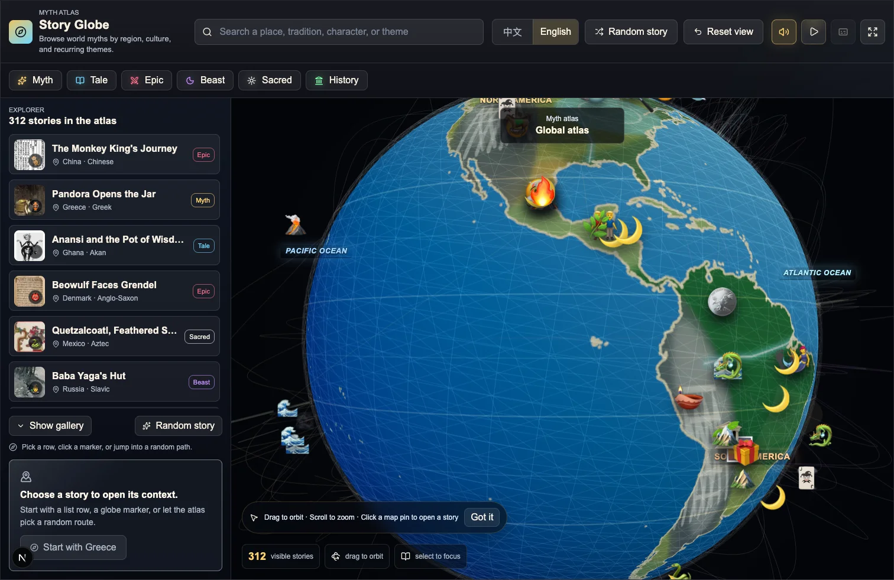
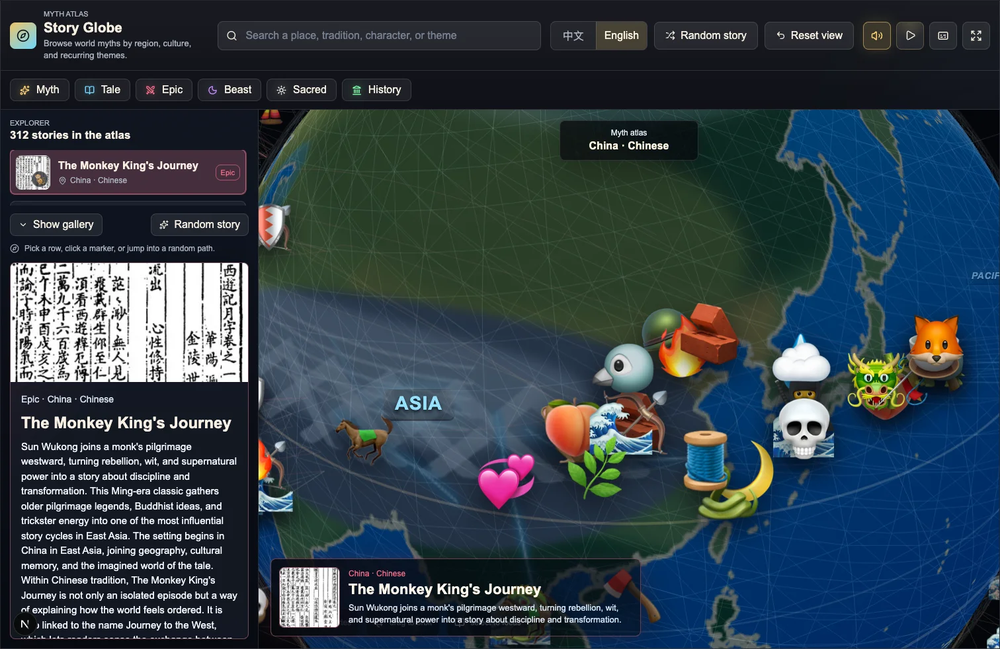
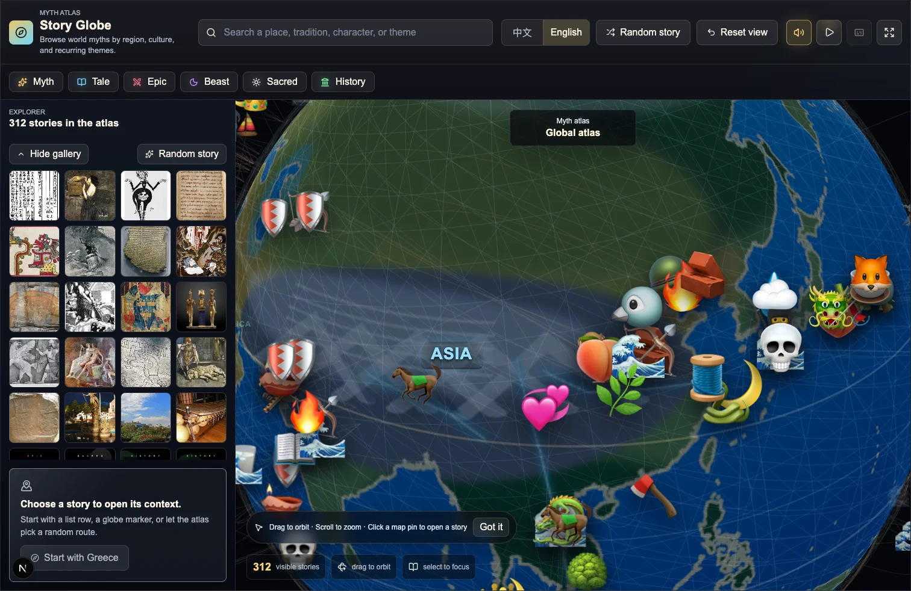

Interactive mythology explorer
A world map for old stories.
Myth Atlas lets you browse mythology, folklore, epics, and legendary creatures through a rotating globe. Start with a place, follow a theme, skim the artwork, or open a story and read the context around it.
- 3D globe, story list, gallery, and detail views
- English and Chinese interface options
- Built for reading, teaching, research notes, and story discovery
Inside the app
Why it works
It is meant for browsing, not just looking up names.
Begin with place
Rotate the globe, zoom in, and click a marker to see stories in their geographic setting.
Follow a thread
Move from one story to related cultures, characters, motifs, and categories.
Browse by image
Gallery mode makes it easy to scan the collection before opening a full story.
Run it locally
The web app is ready for local use, and the repository also includes an Electron desktop build path.
Product tour
See the main views before you run it.



Start here
The quickest ways to try Myth Atlas.
Check releases
If a desktop build is available, GitHub Releases is the simplest place to start.
Go to releasesRun from source
Install Node.js 20+ and pnpm 10, then run the app locally.
pnpm install
pnpm devOpen the app
Visit http://localhost:3000. If that port is busy, use the URL printed in your terminal.
Who it is for
Useful when stories need context.
Mythology readers
Read across regions and traditions without getting lost in unrelated encyclopedia tabs.
Teachers and learners
Use the map to introduce regions, compare themes, and make story geography easier to see.
Writers and researchers
Keep a visual index of motifs, figures, and story leads worth returning to later.
FAQ
Common questions.
Is there a hosted web app?
For now, this GitHub Pages site introduces the project and points you to releases or local setup.
Does it support Chinese?
Yes. The app can switch between English and Chinese.
What if dependency installation is slow?
The project is configured with a more accessible npm mirror. If needed, use your local proxy while installing packages.